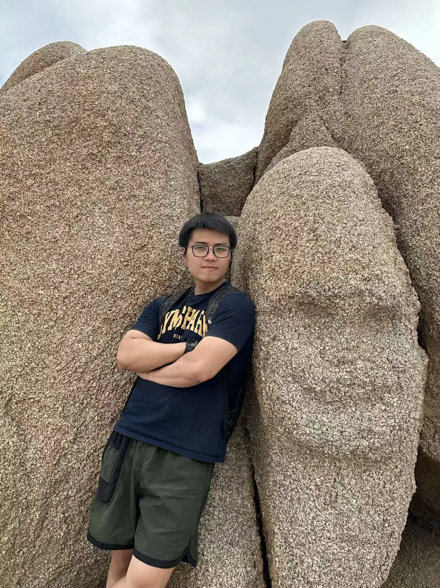

Hello! I'm Jingcheng Li
I'm a computer science student at UC San Diego, focused on 3D Vision and Multimodal AI. As an efficient and detail-oriented researcher, I thrive on solving complex technical challenges. My work combines cutting-edge machine learning techniques with practical applications in computer vision and graphics.
My Skills
- HTML5 & CSS3
- JavaScript
- Python
- PyTorch
Education
UC San Diego
M.S. Computer Science - Expected 2026
UC Irvine
B.S. Computer Science - 2020-2024
Check out my latest projects on the projects page!